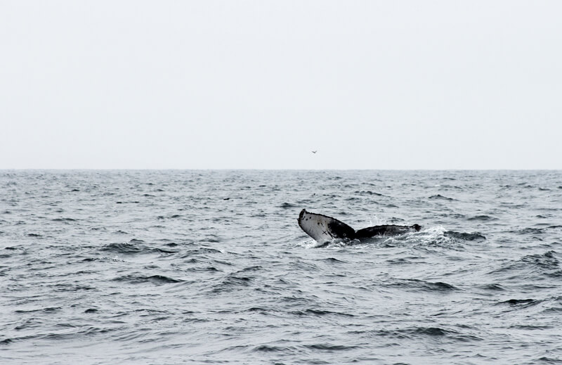
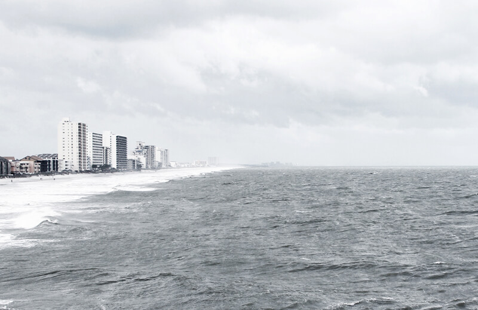

Latest Blog
Donec orci sem, pretium ac dolor et, faucibus faucibus mauris. Etiam,pellentesque faucibus. Vestibulum gravida volutpat ipsum non ultrices.
Something I need to tell you

Donec orci sem, pretium ac dolor et, faucibus faucibus mauris. Etiam,pellentesque faucibus. Vestibulum gravida volutpat ipsum non ultrices.

